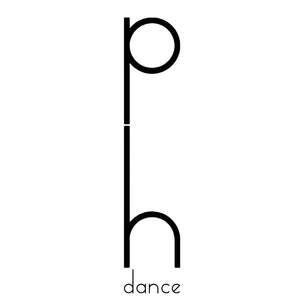

Trade Mark Journal No.2025/020 16 May 2025
UK00004195042 26 April 2025 (41)

- Class 41
- Dance events; Entertainment in the nature of dance performances; Organization of dancing events; Cultural activities; Aerobic and dance facilities; Dance club services; Conducting of entertainment activities; Arranging for students to participate in recreational activities; Organising dancing events; Instruction in sporting activities; Dance instruction; Dance halls (Operation of -); Provision of dance classes; Entertainment in the nature of live dance performances; Dance hall services; Dance schools; Performance of dance, music and drama; Conducting of cultural activities; Organisation of dancing competitions; Arranging group recreational activities; Dance instruction for children; Organisation of entertainment activities for summer camps; Entertainment, sporting and cultural activities; Arranging for students to participate in educational activities; Live dance exhibitions; Dancing competitions (Organising of -); Organising of dancing competitions; Sporting and cultural activities; Cultural and sporting activities; Dance instruction for adults; Organisation of recreational activities; Sporting and recreational activities; Instruction in dancing; Arranging and conducting of entertainment activities; Entertainment in the nature of ballet performances; Organisation of teaching activities; Providing dance halls; Organisation of cultural activities for summer camps; Entertainment in the nature of gymnastic performances; Organisation of group recreational activities; Dance studios; Providing cultural activities; Arranging and conducting of cultural activities; Educational services relating to dancing; Male dance exhibitions; Coaching services for sporting activities; Providing dance facilities; Exotic dancing services; Instruction courses relating to sporting activities; Organisation of educational activities for summer camps; Arranging of seminars relating to cultural activities; Provision of recreational activities; Presentation of live dance performances; Organisation of dancing displays; Dancing displays (Organising of -); Administration [organisation] of cultural activities; Producing and conducting exercises for music classes and programmes; Providing dance hall facilities; Arranging of conferences relating to cultural activities; Provision of facilities for outdoor recreational activities; Ticket reservation and booking services for education, entertainment and sports activities and events; Entertainment services in the nature of arranging social entertainment events; Entertainment services in the nature of organizing social entertainment events; Aerobics competitions; Providing dance studio facilities; Providing instruction in the field of dance; Conducting of entertainment events; Provision of facilities for dancing; Provision of dancing facilities; Dancing facilities (Provision of -); Entertainment services in the nature of competitions; Organizing cultural and arts events; Arranging of musical events; Ballet classes; Music festival services; Arranging of music performances; Providing facilities for recreation activities; Organising of recreational events; Arranging of competitions for education or entertainment; Organisation of entertainment and cultural events; Organisation of musical events; Music performances; Music entertainment services; Ballet lessons; Conducting of performing arts entertainment; Information relating to cultural activities; Organising of entertainment competitions; Organising of competitions for entertainment; Competitions (Organising of entertainment -); Entertainment services performed by a musical group; Organisation of events for cultural, entertainment and sporting purposes; Arranging and conducting of competitions [education or entertainment]; Performing of music and singing; Arranging and conducting of entertainment events; Educational and instruction services relating to arts and crafts; Teaching at junior high schools; Exercise classes; Teaching at elementary schools; Educating at senior high schools; Conducting of classes; Arranging of classes; Providing courses of instruction at high school level; Tutoring at cram schools; Conducting fitness classes; Exercise and fitness classes; Providing courses of instruction at college level; Conducting classes in weight reduction; Conducting distance learning instruction at the college level; Education services in the nature of courses at the university level; Conducting classes in exercise; Conducting distance learning instruction at the graduate level; Conducting classes in weight control; Instruction in ballet; Ballet shows; Presentation of dancing displays; Production of entertainment shows featuring dancers; Personal coaching services in the field of ballet; Teaching of chinese martial arts; Instruction in martial arts; Martial arts instruction.
Sangdi Zhou
Xuefei Chu
Jingwen Lu